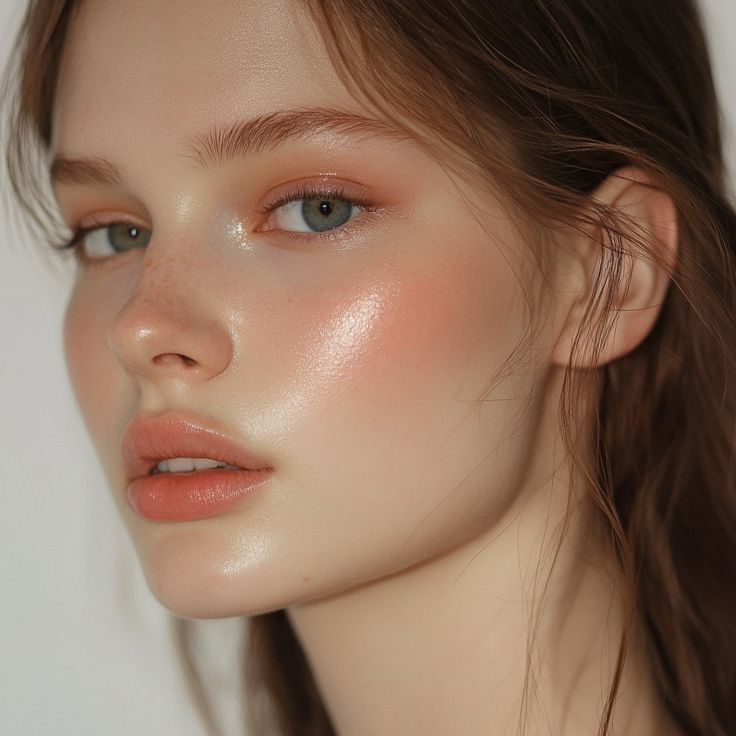
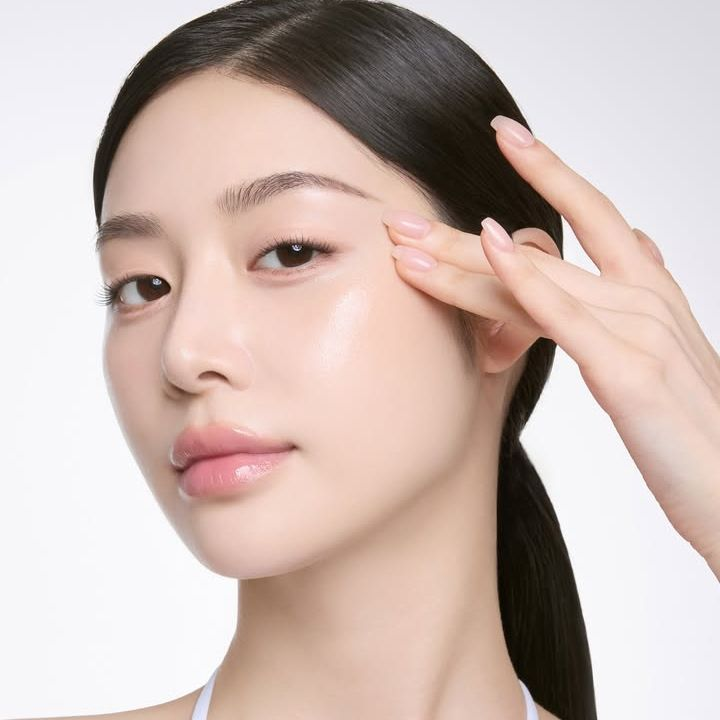
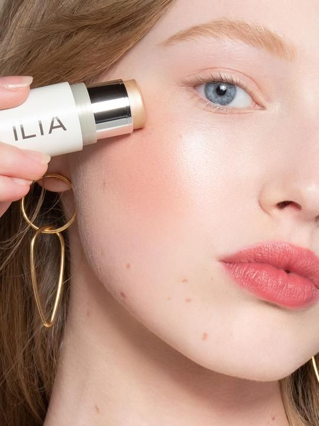
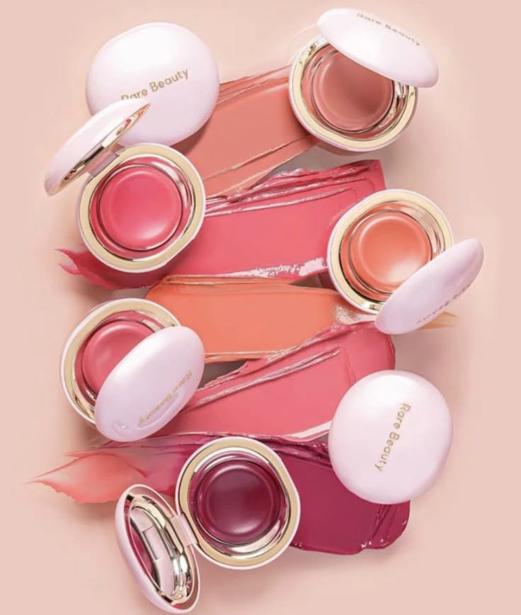
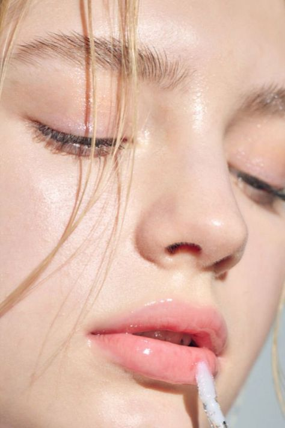

What is the Glass Skin Look?
It’s a look where your skin appears so smooth, hydrated, and luminous, it’s almost mirror-like — just like glass.
“Glass skin” is a Korean beauty trend that has taken over the world — and it’s now winning hearts in Pakistan too! Here's how you can achieve a radiant, reflective glow that looks lit from within.
It’s a look where your skin appears so smooth, hydrated, and luminous, it’s almost mirror-like — just like glass.
Use a hydrating or illuminating primer with glycerin or niacinamide.
Choose a skin-like BB cream or sheer foundation. Go light — avoid full coverage.
Apply pearl or champagne-toned highlighter on cheekbones, brow bone, and nose bridge.
Peach or rose cream blush blends seamlessly and keeps the glow going.
A dab of gloss on your lids and lips gives that healthy, hydrated finish.
The glass skin trend proves that glow comes from within — and with the right prep and products, your skin can reflect that magic effortlessly.